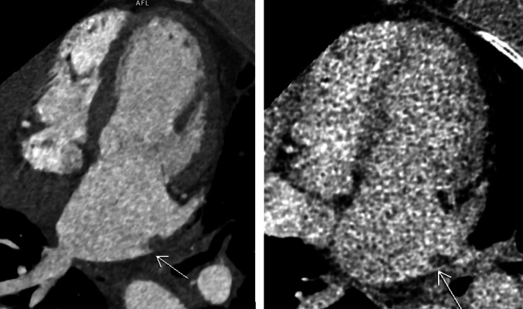
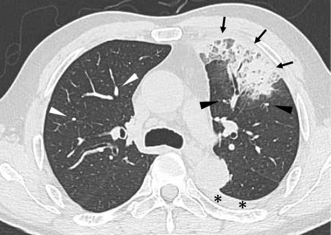
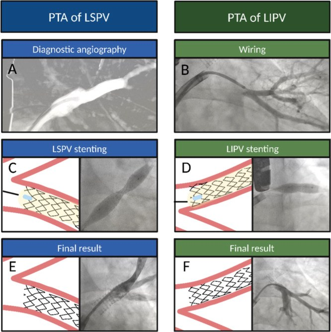

099 — Hẹp tĩnh mạch phổi sau cô lập tĩnh mạch & sau ghép phổi / Pulmonary vein stenosis after AF ablation and lung transplantation
Tags: pattern:hep-tinh-mach pattern:ho-ra-mau pattern:phu-phoi vung:phoi vung:trung-that protocol:CT-tinh-mach-phoi protocol:stent-tinh-mach score:PVS-grade
Mức chắc chắn (certainty): tổng hợp y văn (literature synthesis) — 1 tổng quan ca + y văn về PVS sau ablation (O'Brien G et al., Cureus 2026, PMC13329136), 1 bài tổng quan kỹ thuật stent (Aurigemma C et al., Catheter Cardiovasc Interv 2026, PMC12953203), 1 cohort 4.333 bệnh nhân ablation (Kim J et al., Europace 2023, PMC10558058), 1 loạt 6 ca chẩn đoán bằng CT không cản quang (Kojima S et al., Intern Med 2024, PMC11157311), 1 ca + tổng quan PVS sau ghép phổi (Jing L et al., Ann Transl Med 2021, PMC7867883) và 1 ca PVS mạn gây ho ra máu ồ ạt phải cắt phổi (Osuga F et al., Interdiscip Cardiovasc Thorac Surg 2025, PMC12341673). Số chưa đối chiếu được ghi "chưa rõ", không bịa.
1. Tổng quan bệnh học – cơ chế hình ảnh
- PVS là biến chứng do thầy thuốc gây ra, không phải bệnh phổi nguyên phát. Sau ablation rung nhĩ, năng lượng nhiệt (RF, cryo) truyền vào nội mạc tĩnh mạch phổi tại lỗ đổ vào nhĩ trái → viêm nội mạc → tăng sinh nội mạc (neointimal hyperplasia) + lắng đọng collagen + xơ hóa → lòng tĩnh mạch hẹp dần trong nhiều tuần đến nhiều tháng. Mô bệnh ca mạn tính cho thấy xơ hóa nội mạc không hồi phục (Osuga F et al. 2025).
- Vì sao triệu chứng xuất hiện MUỘN: quá trình xơ hóa tiến triển từ từ, không đau, không sốt. Thời điểm khởi phát trong các loạt: 3–24 tháng (trung vị 4 tháng, Kojima 2024), 48–623 ngày sau ablation (Kim 2023), trung vị 7,5 tuần theo một tổng quan khác (Aurigemma 2026). Vì vậy bệnh nhân thường đi khám sau khi đã quên lần ablation.
- Tần suất thật — đừng hứa "hiếm nên không cần nghĩ":
- PVS có triệu chứng sau ablation: 0,29–3,4% (O'Brien 2026); PVS nặng/cần can thiệp: 0,4–0,7% (Kim 2023).
- Trong cohort 4.333 bệnh nhân của Kim 2023: 14 ca PVS có triệu chứng (0,32%); ablation năng lượng cao thời gian ngắn (HPSD) 0,8% (8/1.019) so với thông thường 0,2% (6/2.832), p = 0,001 — công nghệ "nhanh hơn" không làm giảm nguy cơ.
- Tổng quan Aurigemma 2026 ghi nhận tần suất 1–21% tùy cách chẩn đoán — phản ánh dưới chẩn đoán, không phải dao động thật.
- Vì sao hẹp tĩnh mạch phổi gây hình ảnh "giống viêm phổi": tĩnh mạch hẹp → áp lực mao mạch phổi tăng → phù kẽ/phù phế nang khu trú → kính mờ, đông đặc, dày vách liên tiểu thùy, tràn dịch màng phổi; đồng thời giảm tưới máu vùng hẹp → mạch phổi một bên nhỏ lại, giảm thể tích thùy. Đây là lý do 5/6 ca của Kojima 2024 bị chẩn đoán nhầm viêm phổi, xuất huyết phế nang, ung thư phổi hoặc viêm phổi tổ chức hóa.
- Dấu hiệu định lượng cốt lõi:
- Phân độ hẹp trên CT (Kojima 2024): grade 1 ≤ 50%, grade 2 51–75%, grade 3 76–99%, grade 4 tắc hoàn toàn.
- Chỉ định can thiệp: có triệu chứng + hẹp > 70% lòng mạch (Aurigemma 2026).
- Siêu âm tim qua thực quản (TEE): vận tốc đỉnh 2 m/s, gradient đỉnh 14 mmHg ở ca hẹp nặng (Aurigemma 2026); sau đặt stent, gradient tĩnh mạch phổi 40 → 15 mmHg (Jing 2021).
- Sau ghép phổi: gợi ý PVS khi vận tốc đỉnh tại miệng nối ≥ 1 m/s, đường kính tĩnh mạch < 0,5 cm**, hoặc **giảm > 50% so với bên đối diện (Jing 2021).
- Sau ghép phổi, PVS là biến chứng mạch máu hiếm nhưng chết người: biến chứng mạch sau ghép phổi gặp 1–3%; PVS tại miệng nối làm tăng sức cản, phù thùy, giảm oxy máu và tràn dịch màng phổi tái phát. Trong loạt tổng quan nhỏ, không điều trị tử vong 50% (1/2) so với 11,8% (2/17) ở nhóm được can thiệp — con số rất nhỏ, chỉ nên đọc như tín hiệu, không phải tỷ lệ chính xác (Jing 2021).
2. Mẫu hình + chẩn đoán phân biệt theo vị trí (gamut)
Câu hỏi thực hành: bệnh nhân khó thở/ho ra máu sau ablation hoặc sau ghép phổi — tổn thương ở tĩnh mạch phổi, động mạch phổi, nhu mô hay màng phổi?
- PVS sau ablation (ostial PVS): hẹp ngay tại lỗ đổ của một hoặc nhiều tĩnh mạch phổi, thường một bên, cách lần ablation vài tháng; kèm mạch phổi bên hẹp nhỏ hơn, giảm thể tích thùy, kính mờ/đông đặc, tràn dịch.
- PVS sau ghép phổi (anastomotic PVS): hẹp tại miệng nối tĩnh mạch phổi – nhĩ trái, có thể sớm (vài ngày) hoặc muộn (nhiều tháng–năm); biểu hiện giảm oxy máu tiến triển, tràn dịch màng phổi tái phát, dày vách liên tiểu thùy; có thể kèm hẹp động mạch phổi cùng bên.
- Huyết khối tĩnh mạch phổi: khuyết thuốc trong lòng tĩnh mạch, không phải hẹp thành; bối cảnh ung thư, tăng đông, catheter.
- Thuyên tắc phổi (PE): khuyết thuốc động mạch phổi, cấp tính; không gây hẹp lỗ tĩnh mạch mạn.
- Viêm phổi/viêm phổi tổ chức hóa: đông đặc/kính mờ nhưng không có hẹp tĩnh mạch, mạch phổi bình thường, đáp ứng kháng sinh (hoặc corticoid).
- Ung thư phổi: khối đặc, tăng FDG, có thể xâm lấn tĩnh mạch nhưng không tạo hẹp lỗ đối xứng sau ablation.
- Tăng áp phổi nguyên phát: giãn thân động mạch phổi, không có hẹp tĩnh mạch khu trú.
- PVS bẩm sinh: hẹp lan tỏa/giảm sản nhiều tĩnh mạch ở trẻ, không có tiền sử ablation/ghép.
Mnemonic "PVS" — 3 câu hỏi trước khi kết luận:
- P — Prior procedure? Ablation rung nhĩ, ghép phổi, hay can thiệp tĩnh mạch phổi trong 3–24 tháng qua?
- V — Vessel asymmetry? Mạch phổi một bên nhỏ hơn + giảm thể tích thùy — dấu hiệu rẻ tiền nhất trên CT không cản quang.
- S — Stenosis at the ostium? Hẹp lỗ đổ, không phải hẹp lan tỏa trong nhu mô.
3. Bảng so sánh phân biệt (ma trận đối chiếu)
| Thực thể (entity) | Hình ảnh điển hình (CT/echo) | Chốt vào (rule-in) | Chốt loại (rule-out) | Gợi ý xác nhận |
|---|---|---|---|---|
| PVS sau ablation | Hẹp lỗ đổ một/nhiều tĩnh mạch phổi; mạch phổi bên hẹp nhỏ, giảm thể tích thùy; kính mờ/đông đặc/tràn dịch | Tiền sử ablation + hẹp lỗ > 70% + mạch phổi một bên nhỏ | Không hẹp lỗ, không bất đối xứng mạch → nghĩ viêm phổi | CTA tĩnh mạch phổi thì tĩnh mạch; TEE gradient; V/Q |
| PVS sau ghép phổi | Hẹp tại miệng nối, tràn dịch màng phổi tái phát, dày vách liên tiểu thùy, giảm oxy máu | Miệng nối hẹp + gradient qua miệng nối + tràn dịch tái phát | Không hẹp miệng nối; thải ghép/infection có hình ảnh khác | CTA/CTV, TEE, chụp tĩnh mạch phổi đo gradient |
| Huyết khối tĩnh mạch phổi | Khuyết thuốc trong lòng, thành mạch không hẹp; có thể lan từ nhĩ trái | Khuyết thuốc lòng mạch + bối cảnh tăng đông/ung thư/catheter | Hẹp lỗ đối xứng, không khuyết thuốc → PVS | CTV thì muộn; siêu âm; D-dimer |
| Thuyên tắc phổi | Khuyết thuốc động mạch phổi, cấp; thất phải giãn | Khuyết thuốc động mạch + cấp tính + D-dimer | Tĩnh mạch phổi bình thường → không phải PVS | CTPA; siêu âm tim |
| Viêm phổi / viêm phổi tổ chức hóa | Đông đặc, kính mờ, dày vách; mạch phổi bình thường, không giảm thể tích | Đáp ứng kháng sinh/corticoid; không hẹp tĩnh mạch | Hẹp lỗ + mạch một bên nhỏ → PVS | Theo dõi X-quang/CT; BAL nếu cần |
| Ung thư phổi / di căn | Khối đặc, bờ gai, tăng FDG; có thể xâm lấn tĩnh mạch | FDG dương + khối + sinh thiết | Đông đặc dạng khối không FDG + giảm thể tích = PVS | PET/CT; sinh thiết |
| Tăng áp phổi | Giãn thân/nhánh động mạch phổi, dày thành; không hẹp tĩnh mạch khu trú | PAP trung bình ≥ 20 mmHg + không hẹp tĩnh mạch | Hẹp lỗ tĩnh mạch rõ → PVS là nguyên nhân | Siêu âm tim, catheter phải |

Nữ 65 tuổi, 5 tháng sau ablation: (trái) thì động mạch — hẹp nặng lỗ đổ tĩnh mạch phổi trên trái (mũi tên); (phải) thì muộn — chỉ còn một vệt thuốc mảnh ở lòng xa, chứng tỏ dòng chảy gần như tắc. Nguồn: O'Brien G et al., Cureus 2026, PMC13329136 Fig. 3, CC BY 4.0.Đọc CTA tĩnh mạch phổi theo 4 bước
- Xác định 4 lỗ đổ (trên/phải, trên/trái, dưới/phải, dưới/trái) trên mặt cắt ngang và reformat theo trục tĩnh mạch; đo đường kính chỗ hẹp nhất và đường kính đoạn xa.
- Tính % hẹp và xếp grade: ≤ 50% / 51–75% / 76–99% / tắc hoàn toàn (Kojima 2024).
- Tìm dấu hiệu gián tiếp: mạch phổi một bên nhỏ hơn, giảm thể tích thùy, kính mờ/đông đặc, dày vách liên tiểu thùy, tràn dịch màng phổi.
- Loại trừ huyết khối: khuyết thuốc trong lòng vs hẹp thành; nếu cần, CTV thì muộn hoặc siêu âm tim qua thực quản.
4. Protocol chụp + phân độ & quyết định can thiệp
Protocol
- CTA tĩnh mạch phổi (pulmonary venography): lát ≤ 1 mm, ECG-gated nếu có, thì động mạch phổi + thì muộn 30–40 giây để thấy thuốc vào nhĩ trái và đánh giá lỗ đổ; reformat theo trục từng tĩnh mạch, đo lỗ và đoạn xa.
- TEE: đo vận tốc đỉnh và gradient đỉnh qua lỗ hẹp; giá trị gợi ý khi vận tốc ≥ 2 m/s / gradient ≥ 10–14 mmHg (Aurigemma 2026; Jing 2021).
- V/Q scan: đánh giá mismatch giảm tưới máu vùng hẹp — hữu ích khi CT không rõ hoặc để theo dõi chức năng (Bollos 2025, PMC11682475).
- DSA tĩnh mạch phổi + đo gradient: tiêu chuẩn vàng trước can thiệp; đo áp lực đoạn xa lỗ hẹp – nhĩ trái (ca Jing: 40 → 15 mmHg sau stent).
Phân độ & thuật toán
- Không triệu chứng + hẹp nặng: theo dõi hình ảnh mỗi 3–6 tháng, can thiệp khi xuất hiện triệu chứng hoặc hẹp tiến triển (Aurigemma 2026).
- Có triệu chứng + hẹp > 70%: nong bóng + đặt stent là lựa chọn ưu tiên. Nong bóng đơn thuần có tái hẹp 47–61%; stent giảm còn 0–47%, kết quả tốt hơn khi stent > 9 mm (Aurigemma 2026).
- Sau stent: kháng kết tập tiểu cầu kép ≥ 6 tháng (aspirin + clopidogrel); CTA/TEE theo dõi 4–8 tháng rồi mỗi năm; phát hiện tái hẹp trong stent.
- Ngoại khoa: vá tĩnh mạch phổi (patch angioplasty), tái tạo miệng nối, hoặc cắt phổi khi phổi đã hư/mất chức năng và ho ra máu ồ ạt không kiểm soát (Osuga 2025: cắt phổi trái 18 tháng sau ablation vì ho ra máu ồ ạt).
- Sau ghép phổi: ưu tiên stent hơn nong bóng đơn thuần; can thiệp sớm khi có gradient và tràn dịch tái phát; phối hợp chống thải ghép.
flowchart TD
A[Khó thở hoặc ho ra máu sau ablation hoặc ghép phổi] --> B[CTA tĩnh mạch phổi]
B --> C{Hẹp lỗ đổ tĩnh mạch phổi?}
C -->|Không| D[Tìm nguyên nhân khác: viêm phổi PE thải ghép]
C -->|Có| E{Triệu chứng và hẹp hơn 70 phần trăm?}
E -->|Không| F[Theo dõi 3 đến 6 tháng]
E -->|Có| G[Nong bóng và đặt stent]
G --> H[Kháng kết tập tiểu cầu kép 6 tháng]
H --> I[CTA hoặc TEE 4 đến 8 tháng]
5. Biến thể bình thường và cạm bẫy
- Cạm bẫy số 1 — CT không cản quang bị đọc là viêm phổi: trong 6 ca của Kojima 2024, 5/6 bị chẩn đoán nhầm viêm phổi/xuất huyết phế nang/ung thư/viêm phổi tổ chức hóa. Dấu hiệu rẻ tiền nhất là mạch phổi một bên nhỏ hơn — có ở 100% (6/6) ca, kèm giảm thể tích thùy ở phần lớn; đừng chỉ nhìn đám mờ.
- Cạm bẫy số 2 — "khối giống ung thư" không tăng FDG: PVS mạn có thể tạo đám đông đặc dạng khối + xẹp + dày rãnh liên thùy, PET không tăng FDG (Kojima ca 5). Nếu bệnh nhân có tiền sử ablation và đám mờ một bên + giảm thể tích, nghĩ PVS trước khi sinh thiết.
- Cạm bẫy số 3 — CTA "bình thường" vì chụp sai thì: nếu chỉ chụp thì động mạch phổi, thuốc chưa vào nhĩ trái, lỗ đổ tĩnh mạch có thể không đánh giá được. Luôn có thì muộn và reformat theo trục tĩnh mạch.
- Cạm bẫy số 4 — sau ghép phổi, tràn dịch + dày vách bị gọi là thải ghép/nhiễm: PVS tại miệng nối gây tràn dịch tái phát, giảm oxy máu, trong khi sinh thiết phế quản âm tính; phải đo gradient qua miệng nối (Jing 2021).
- Cạm bẫy số 5 — ho ra máu do PVS bị gọi là PE/nhiễm: ho ra máu trong PVS do tăng áp tĩnh mạch + nhồi máu phổi, không phải thuyên tắc động mạch; kháng đông không giải quyết, phải giải áp tĩnh mạch.
- Biến thể bình thường: tĩnh mạch phổi trên và dưới cùng đổ chung một lỗ (common ostium) — biến thể giải phẫu, không phải hẹp; đừng đo nhầm "hẹp" ở chỗ tách đôi.
6. Tự lượng giá — Blind Quiz
Ca 1 — Nữ 65 tuổi, khó thở tăng dần và ho ra máu 5 tháng sau ablation rung nhĩ. Đã điều trị "viêm phổi" 2 lần không đỡ.
- Hỏi: tổn thương ở đâu? Vì sao đã điều trị viêm phổi mà không đỡ? Cần đo gì để quyết định can thiệp?
Bấm để hiện đáp án (findings + chẩn đoán)
- Findings: hẹp nặng (> 90%) lỗ đổ tĩnh mạch phổi trên trái; thì muộn chỉ còn vệt thuốc mảnh ở lòng xa → dòng chảy gần như tắc. Không có khuyết thuốc trong lòng kiểu huyết khối.
- Chẩn đoán: PVS sau ablation — hẹp lỗ đổ do xơ hóa nội mạc, không phải viêm phổi.
- Vì sao "viêm phổi" không đỡ: đám mờ là phù do tăng áp tĩnh mạch, không phải nhiễm khuẩn; kháng sinh không thể mở hẹp.
- Quyết định: có triệu chứng + hẹp > 70% → nong bóng + stent; ca này đặt stent cả hai tĩnh mạch trái, theo dõi CTA 4 và 8 tháng, kháng kết tập tiểu cầu kép ≥ 6 tháng.
- Nguồn ảnh: O'Brien G et al., Cureus 2026, PMC13329136 Fig. 3, CC BY 4.0.
Ca 2 — Nam 61 tuổi, ho ra máu, sốt nhẹ; CT không cản quang thấy đám mờ thùy trên trái. Chẩn đoán ban đầu: viêm phổi.

- Hỏi: ngoài đám mờ, còn dấu hiệu nào trên CT không cản quang gợi ý nguyên nhân mạch máu? Ba phân biệt?
Bấm để hiện đáp án (findings + chẩn đoán)
- Findings: đông đặc + kính mờ + dày vách liên tiểu thùy thùy trên trái (mũi tên), tràn dịch màng phổi (dấu *); mạch phổi thùy trên trái nhỏ hơn bên phải (đầu mũi tên đen vs trắng) và giảm thể tích thùy.
- Chẩn đoán: PVS sau ablation (ca 3 trong loạt Kojima 2024) — hẹp grade 4 tĩnh mạch phổi trên trái, ban đầu bị gọi viêm phổi.
- Phân biệt: viêm phổi (mạch phổi bình thường, không giảm thể tích), xuất huyết phế nang (thường hai bên, không hẹp lỗ), ung thư (khối + FDG, không hẹp lỗ).
- Bài học: mạch phổi một bên nhỏ + giảm thể tích là dấu hiệu gợi ý trên CT không cản quang; cần CTA tĩnh mạch phổi thì muộn.
- Nguồn ảnh: Kojima S et al., Intern Med 2024, PMC11157311 Fig. 3, CC BY-NC-ND 4.0 — dùng nguyên bản, không cắt/ghép.
Ca 3 — Bệnh nhân PVS được can thiệp. Hình dưới là các bước nong bóng và đặt stent.

- Hỏi: vì sao chọn stent thay vì chỉ nong bóng? Theo dõi gì sau thủ thuật?
Bấm để hiện đáp án (findings + chẩn đoán)
- Findings: (A) chụp tĩnh mạch phổi trên trái — hẹp lỗ; (B–C) nong bóng và đặt stent; (D–F) tĩnh mạch dưới trái — nong bóng, stent, kết quả cuối lòng mạch rộng.
- Vì sao stent: nong bóng đơn thuần có tái hẹp 47–61%; stent giảm còn 0–47%, tốt hơn khi stent > 9 mm (Aurigemma 2026).
- Theo dõi: kháng kết tập tiểu cầu kép ≥ 6 tháng; CTA/TEE 4–8 tháng rồi mỗi năm; phát hiện tái hẹp trong stent — yếu tố quyết định can thiệp lại.
- Nguồn ảnh: Aurigemma C et al., Catheter Cardiovasc Interv 2026, PMC12953203 Fig. 5, CC BY 4.0.
Bài liên quan chéo
- 001 – Tổng quan hệ Ngực
- 040 – Tràn dịch màng phổi (tràn dịch tái phát sau ghép/PVS)
- 070 – Thuyên tắc phổi cấp (phân biệt khuyết thuốc động mạch vs tĩnh mạch)
- 091 – Ho ra máu ồ ạt & nút mạch động mạch phế quản (ho ra máu từ hệ thống)
- 093 – Hội chứng tĩnh mạch chủ trên (hẹp tĩnh mạch, stent)
- 095 – Hẹp/tắc tĩnh mạch trung tâm ở bệnh nhân lọc máu (hẹp tĩnh mạch do catheter, PTA vs stent)
Ảnh
- Tên file:
099_pvs_Modality_SourceID-FigN-License.jpg; nguồn + giấy phép từng ảnh trongimages/CREDITS.md. - Ảnh CC BY 4.0 được tải và chú thích; ảnh CC BY-NC-ND 4.0 dùng nguyên bản, không cắt/ghép.
Không dùng để chẩn đoán độc lập khi chưa có người hướng dẫn.